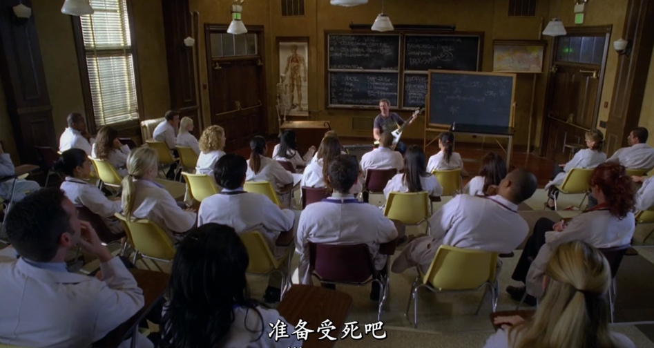
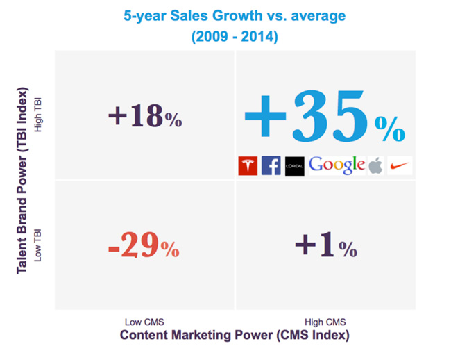
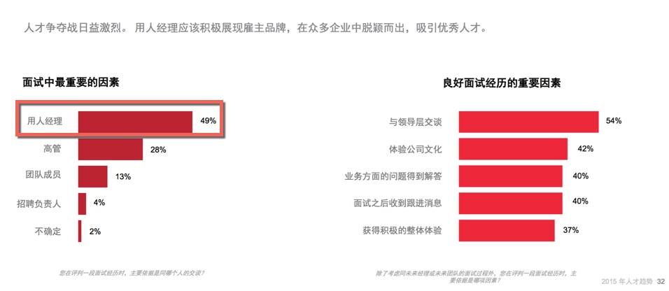

面试官: 豪斯医生 001
你坠入爱河，结了婚有一半机会，你会惨淡收场。
雇佣下属则更难，因为你知道，他们终究是要离开的。
你受伤了，别伤心了。死党 Wilson 安慰着豪斯。
豪斯不会结婚，也不想有下属。
谁要下属呢？ 谁要下属呢……
谁要下属呢！
春天的花开了，鸟儿也叫了，豪斯的心情却不好了，因为美女院长太懂他啦。
“音乐会”被拔电结束，一切又要重新开始了。以前伤心过，团队的人纷纷离开。伤心过，好了——又要开始了吗？
一开始他狡猾想开溜：
我不能接这个病号， 我没有团队
那就雇一个团队
要团队干什么？ 我没有病人
然而当一个人的时候，他即便是就地逮了个清洁工，他也要把他当下属，在那里对着清洁工试探意见、带着他去做听诊记录，还让人入室去找证据。为了那快要崩溃的病人，他还在医院里不停问其他医生：对她的病症有什么想法吗。
最后治错了人，救活了人，没想到团队还是要组建。
Cameron就不会轻信这个人对他的爱人一无所知
当你判断是多种病症并发，Foreman会尽一切可能证明你错了
Chase会尽一切可能证明你对。
正如美女院长所道破。他一个人忙不过来，他太需要一队下属检测他的观点。
选角心碎
豪斯以为他能单干，然而事实证明他需要一个团队。
一边是院长紧逼着他组建团队，一边是他恐吓候选人团队。
豪斯一定不是大坏蛋，豪斯一定是好医生，豪斯更是个特例。
有时 我会错，我有观察的天分，在不同环境下审视人心。但有时候 我会犯错。
这将是你经历最长的一个面试。我会用各种方法，在你们看来：不公平的、 苛刻的 、违法的办法来考验你们。
豪斯也开始选角了。
也许这一次让他们慢慢地消失，慢慢淘汰她们，最后更珍惜留下来的计划，会不会不一样呢？
这一季的下属选角开始了。开始选实习医生了，是的，可不是刚毕业的医生。
豪斯要组建团队。这个取得了另类成效的人建团队，各路医生怎么也是趋之若鹜。就算他只有 3 个名额！
就如同他所信奉「每个人都会撒谎」！自然他也会用独特手法来选人了。
看看你左边，看看你的右边，6周以后 你们中有人将会出局。
还有28个人也是这个下场。
准备受死吧！

另类成效
如果说好莱坞的「选角沙发」让下面的美女心碎是因为交易太深，尺度过人。能逃则逃 。
自己成名后经历了很多次的沙发甄选，对方都是有头有脸的大人物，在谈话之后，才发现对方另有所图，让她一次又一次的心碎。
这些医生们却不会逃。哪怕是准备受死，他们也是巴不得离豪斯更近，跟着豪斯更久。
因为他们渴望得到一个「卓有成效」的领导者。
欢迎联系 Arvin Yu , 邮箱：yuyandong@outlook.com
本作品采用 知识共享署名-非商业性使用-禁止演绎 3.0 Unported许可协议 进行许可。
面试体验：像谷歌一样，别吓他们
在 谷歌的网站 上，可以找到这样一个实践，它说：
Google wants interviewing to be part of every Googler’s job
谷歌希望面试成为每个员工职责的一部分。
然后在文章中，它列出了谷歌招聘团队对面试官们的培训和支持的方法，以此达成让面试工作可以成为每一个谷歌人工作中的一部分。
看完他们的做法，我在想这是否也是另一种意义上的 “全员招聘”。
一起做，高成长
市场竞争激励，高素质人才难求，越来越多的公司将各部门力量投入到招聘中，不仅促进了招聘效果的提升，也给业务带来了更多发展。
Matt Renart 提供的 数据显示, 在市场部门的参与协同下，不仅招聘部门和市场部门各自都得到了好处，更使得企业增加了 35% 的销售额。
为了提升招聘体验和加快招聘效率，更多的部门在人力资源部门的引导下，让成员们投入到以下环节，提供更多支持。比如：
Team 展示—— 团队成员、团队气氛 、团队间交流风格
部门多成员一起参加面试，投入到面试环节——面试并一起做出录用决策
投入到新人 Onboarding（接待、指定同事指导 ）
成败在此
招聘的实践环节中， 贯穿其中、也最受关注、关乎面试成败的自然是面试体验。

而在面试体验中，候选人与用人部门面试官的沟通对面试体验的影响最大 。
比如谷歌，它之所以希望面试成为每个员工职责的一部分？主要还是因为相比公司职位与福利，候选人关更注与用人部门面试官的沟通。
谷歌内部调研显示，在招聘体验上，候选人提及最多的是他们与面试官的交流——对大部分候选人来说，这方面的重要性高于岗位类别、福利、也高于与招聘人员的交流；
在中国，候选人的面试经历中，他们看重的最重要的因素不是招聘负责人，而是与部门面试官的，特别是用人经理。 2015 年人才趋势报告的数据揭示

结果不同
招聘其实也是企业的一种销售——将企业岗位 “销售” 给合适的候选人。
求职者是公司潜在客户，好的、坏的体验带来极不同的结果。只是大部分的招聘人员未觉察或者不愿如此察觉。
好的实践，如谷歌，为公司带来了更多的资源。
被谷歌面试过和拒绝的人员中，有 80% 的人说他们会推荐朋友来申请谷歌的工作。
相反，不好的面试体验带来的不仅是招聘资源的损失，也是营收的流失。坏的实践，比如，一个容易忽视，不显眼的环节——面试后，候选人没有得到面试反馈，会如何呢？
有 58% 没有收到目标公司答复的应聘者，较少可能购买该公司产品；更惊人的是，面试后没有得到结果反馈的人中有 65% 也有这样的倾向。
结果大不同，你希望看到哪种结果呢？
照顾好他们
以上提醒我们一个基本事实：大家都喜欢好的面试体验，没有人喜欢坏的面试体验。
你的候选人他们自然也不会喜欢。他们像你的客户一样，也希望得到优质的服务。
所以像谷歌一样，培养好面试官，照顾好候选人。
传递企业的优质文化，提升面试体验，别吓他们。
欢迎联系 Arvin Yu , 邮箱：yuyandong@outlook.com
本作品采用 知识共享署名-非商业性使用-禁止演绎 3.0 Unported许可协议 进行许可。
Copyright © 2015 Powered by MWeb, Theme used GitHub CSS.